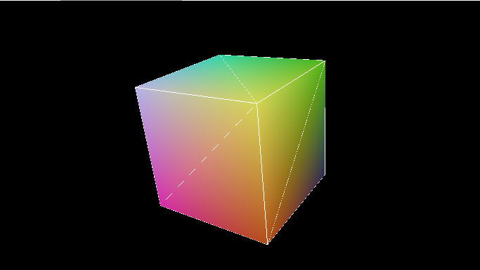
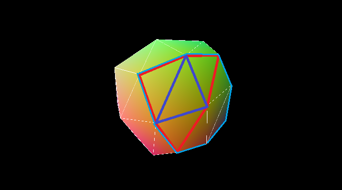
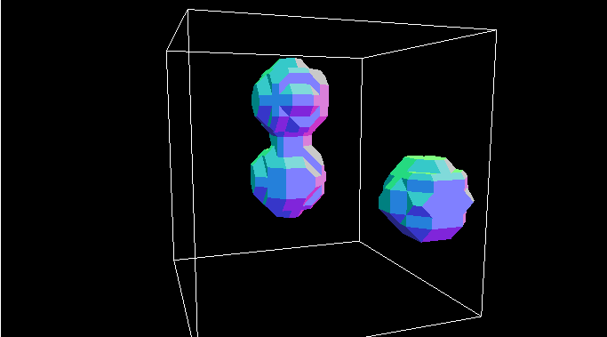
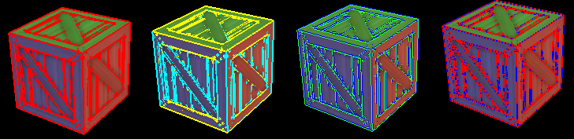
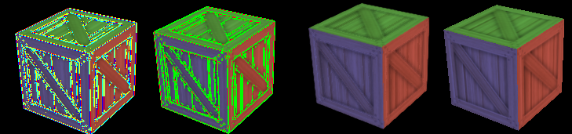

Rapport de rendu temps réel
Les titres sont cliquables pour voir ce qui a été développé et des morceaux du code.
Loop Subdivision
Dans ce projet j'ai implémenté l'algorithme de Loop pour la subdivision de maillage triangulaire.
A chaque itération on créé 3 nouveaux points se trouvant sur les bords des triangles déjà existants et on déplace les anciens points.
Par exemple pour le cube :

Ce qui nous donne après un pas de subdivision, en rouge un triangle étudié, en bleu les arrêtes formés à partir des nouveaux points et en cyan l'ancienne face du cube :

Le nombre de pas de subdivision peut être selectionné ainsi que la géométrie initiale et l'affichage des arrêtes ou non.
Implicit Surfaces
L'algorithme du marching cubes permet la visualisation des surfaces implicites.
En effet ces dernières sont caractérisées à partir d'une équation, donc elles ne sont pas directement visible à l'écran.
On partage l'espace à une certaine résolution, dans notre cas l'espace est un cube de taille 1x1x1 et la résolution initiale 12.
Pour chaque point de cet espace on calcule la somme des fonctions caractérisant nos objets, ici des metaballs (caractérisées par une fonction custom).
Cela nous permet de déduire quels sommets sont à l'intérieur ou à l'extérieur de notre seuil.
On trouve ainsi à l'aide d'une correspondance dans une table les triangles à tracer.
Si on s'arrête ici le résultat se présente de cette façon :

On effectue alors une interpolation linéaire entre les valeurs des sommets pour approximer l'endroit où la fonction dépasse notre seuil.
Enfin cela était déjà le cas sur la prise d'écran mais il faut stocker de façon intelligente cette interpolation pour ne pas dupliquer les sommets et permettre le calcul de la normale à la surface.
Le résultat plus parlant en étant animé est disponible en exemple.
Fast Approximated Anti-Aliasing
On s'intéresse à l'algorithme FXAA.
L'agorithme est implémentée à l'aide d'un shader qui s'applique sur la texture de l'écran récupérée après un premier rendu.
Ci-dessous les différents rendus qui sont accessibles depuis l'exemple et l'explication par rapport à l'algorithme :

La première image montre les pixels sélectionnés en rouge pour subir le traitement anti-aliasing : ceux se trouvant sur un bord ou la différence de luminosité est importante et dans une région qui n'est pas trop sombre.
La deuxième les pixels sont triés entre ceux qui sont calculés comme étant sur un bord horizontal en jaune ou vertical en bleu.
La troisième montre les "paires" de pixels et leur attribue une couleur en fonction de la direction dans laquelle on s'est déplacé d'un demi-pixel (à 90° par rapport au bord).
La quatrième montre dans quelle direction on s'est le plus étendu avant d'atteindre notre limite de gradient pour la luminosité.

La première montre un mélange entre les deux précédentes images et n'est pas forcément très lisible mais reproduit les exemples fournis par NVIDIA sur son papier.
La deuxième est une vue "custom" qui permet de voir les endroits où a été utilisée la fonction de filtre proposée dans le papier de NVIDIA. Elle est utilisée si elle dépasse la valeur calculée à la dernière étape de l'image précédente.
Les deux dernières montrent le résultat, avec à gauche le rendu filtré.